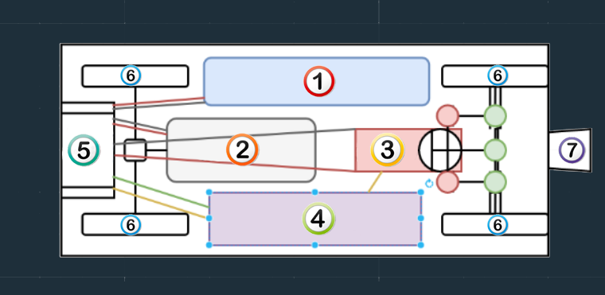
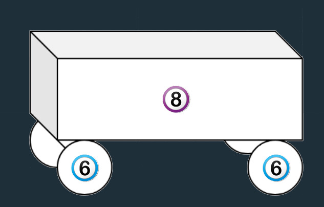

Dans cette partie, nous allons analyser les composants de notre chariot. Nous allons nous focaliser sur les composants les plus importants et ne ne parlerons donc pas de tout ce qui est câble de connexion ou encore axes de rotations.
Les composants sont le coeur du chariot. Ce sont eux qui permettent son fonctionnement et son originalité face à des chariots classiques.

Vue verticale du charriot
- Nous retrouvons tout d'abord la batterie. Elle est la source d'énergie de notre chariot. Sans elle, aucun composant
electronique ne pourrait fonctionner. L'énerie electrique est acheminée de la batterie jusqu'a chaque composant via des
files electriques. Nous avons dû raliser nous même chaque soudure à la main et ensuite vérifier avec un multimetre
que le courrant passait bien dans le circuit.
-
Le moteur est l'élément principal du montage. C'est lui qui est chargé de la propulsion du chariot
et que donne l'interet de ce projet. Il est controlé par le Arduino qui lui transmets ses instructions.
il est également lié au controlleur d'alimentation qui permet de régler la puissance du moteur. Nous avons dû réaliser
divers test sur le choix du moteur afin d'obtenir une puissance suffisante en fonction de la charge transporter,
tout en respectant nos budgets.
-
Les servos monteurs moteur permettent de gérer la direction du chariot. Nous un utilisons deux, un pour chacunes
des roues. Elles doivent être parfaitement coordonnées afin que la direction soit optimale, le Arduino est donc ici
soliciter. Les servos sont en fait deux axes motorisés qui peuvent tourner à droite ou à gauche auquel un autre
les relieras aux roues qui suivront donc les mêmes mouvements.
-
Nous retrouvons ensuite le Arduino. Il s'agit en quelque sorte du cerveau de notre projet.
C'est grâce à lui que nous pouvons réaliser diverse action avec le chariot.
En effet, il s'agit d'une carte electronique programmable dans laquelle nous pouvons implanmenter le contrôle des servos
moteurs pour aller à droite ou à gauche ou encore le controle du moteur pour avancer ou reculer
-
Vient ensuite le controlleur d'alimentation. Il est directement lié au Arduino qui lui donnera des instructions a
appliquées et à la batterie dont il recevra l'énergie avant de la redistribuer dans le circuit.
Son rôle est donc de contrôlé la puissance du courant. Cela nous permet de moduler la puissance électrqiue que
va recevoir le moteur et ainsi réguler la puissance que celui-ci pourra délivrer. En d'autre terme cela nous permettra
de contrôler la vitesse du moteur ainsi que ca puissance.
-
Afin de pouvoir faire avancer notre chariot, nous avons évidemment besoin de roues. Nous avons du étudier nos besoins
car il nous faut assurer une certaine stabiliter et adhérence au chariot. Nous avons donc choisit d'utiliser des pneus
plein mou afin d'assurer la stabiliter du charriot. Nous avons également choisit comme matière le caoutchouc pour une
adhérence maximale.
-
Ce petit bloc auxilliaire est en fait un des élément centraux du chariot. Il s'agit d'un boitier de transmission bluetooth.
C'est grâce à lui que nous allons pouvoir créé des instructions sous forme de code sur notre ordinnateur et les envoyer
en temps réel au chariot afin qu'il puisse les appliquer aussitôt. C'est donc de cette façon que nous allons créer une
sorte de télécommande qui nous permettra de contrôler notre chariot.

Vue isométrique du chariot
-
Enfin, pour la structure du chassis du chariot, nous avons choisit une base en bois contre plaqué. Cela nous permet
ainsi d'allier légéreté et robustesse ce qui nous semble idéal dans le cadre de ce projet. nous avons comme dimensions,
30 cm de hauteur, 30 cm de largeur et 50 cm de long. Ce modèle réduite devrait quand même donc etre capable de
transporter des charges tels que des paquets de feuilles ou de farine.